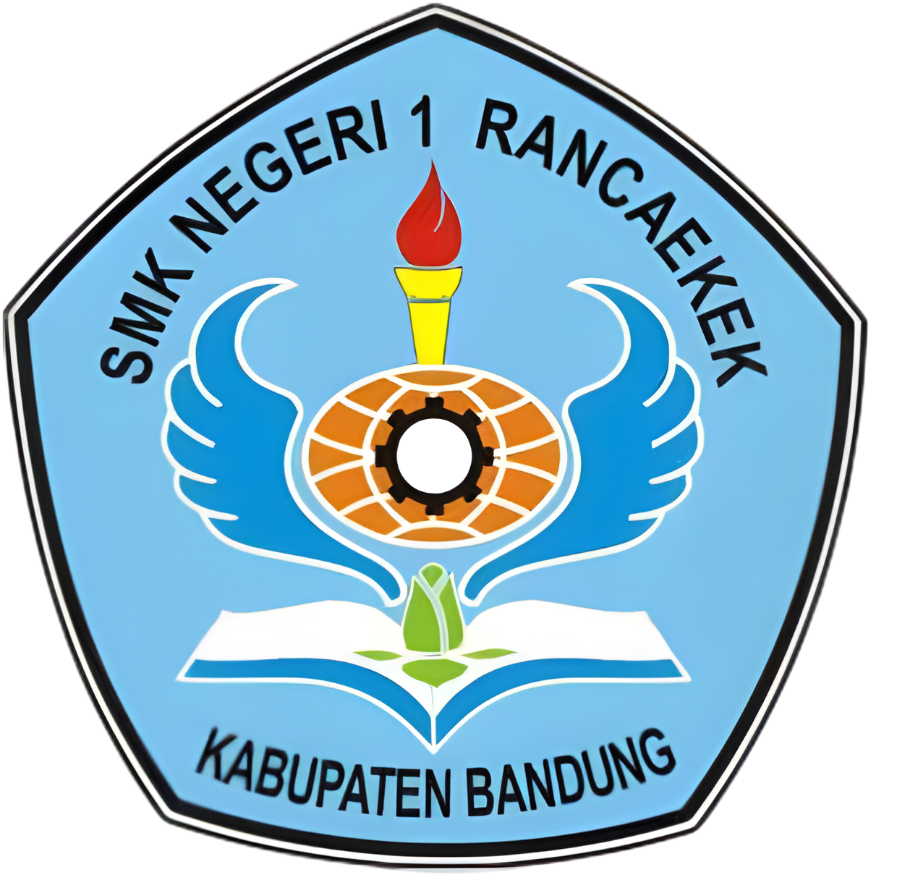
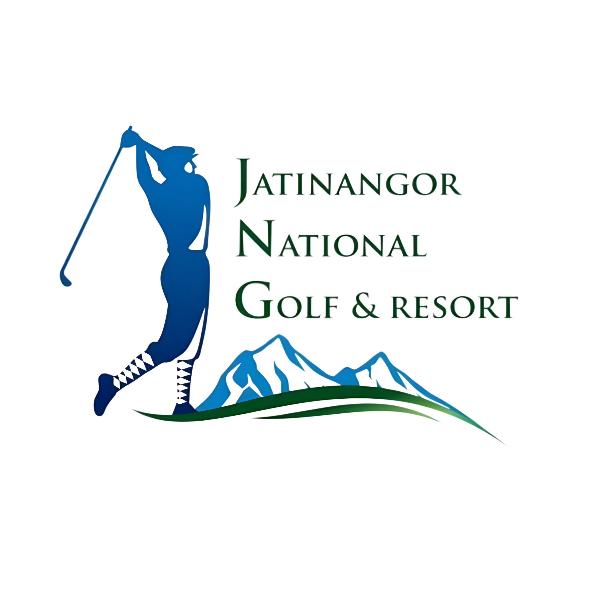
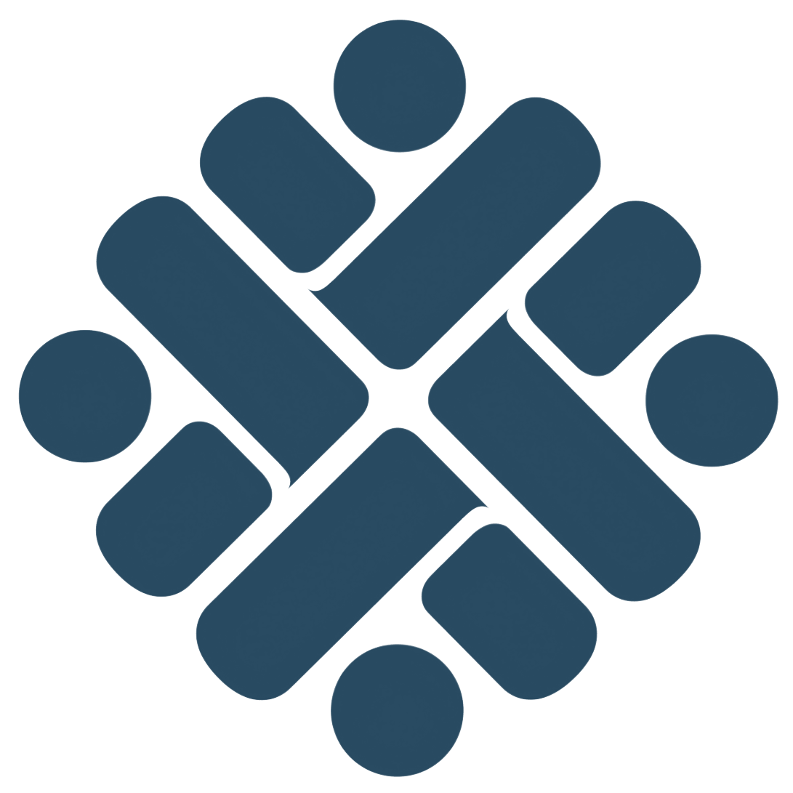

Teknik Instalasi Tenaga Listrik dan Smart Building
Agus Taufik Rahman
Belajar, membangun, dan memahami cara kerja teknologi.
Dari kelistrikan, Engineering, hingga Smart Building dan web development.
- Pendidikan
- SMKN 1 RancaekekTeknik Instalasi Tenaga Listrik
- PKL
- EngineeringJatinangor National Golf & Resort
- Pelatihan
- Smart BuildingBBPVP Bandung
- Belajar mandiri
- Web developmentHTML, CSS, dan JavaScript
Tentang
Halo, perkenalkan saya Agus Taufik Rahman. Saya merupakan lulusan SMK Negeri 1 Rancaekek dari jurusan Teknik Instalasi Tenaga Listrik dengan latar belakang di bidang instalasi dan pekerjaan kelistrikan.
Selama menjalani Praktik Kerja Lapangan (PKL) di bagian Engineering Jatinangor National Golf & Resort, saya mendapatkan pengalaman langsung dalam pekerjaan teknis, seperti pemeriksaan panel, pengecekan dan perawatan genset, maintenance AC indoor dan outdoor, penggantian lampu, pekerjaan penerangan, serta perbaikan jaringan.
Setelah menyelesaikan pendidikan, saya melanjutkan pengembangan kemampuan melalui pelatihan Pembuatan Sistem Integrasi Bangunan Cerdas di BBPVP Bandung. Di sana saya mempelajari Building Automation System (BAS), K3, penangkal petir, instalasi tegangan rendah, alat ukur dan pembatas, pengukuran listrik dan elektronik, security system, serta dasar embedded system dan mikrokontroler berbasis IoT.
Selain bidang kelistrikan dan Smart Building, saya juga sedang mengembangkan kemampuan di bidang web development secara mandiri menggunakan HTML, CSS, dan JavaScript. Bagi saya, proses belajar tidak berhenti pada pendidikan formal, tetapi terus berkembang melalui praktik, proyek, dan pengalaman baru.
Pengalaman
-

Pendidikan
SMK Negeri 1 Rancaekek
JL. Bojong Salam, Rancaekek, Bojongsalam, Bandung, Kabupaten Bandung, Jawa Barat 40394
Sekolah kejuruan tempat saya menempuh pendidikan di bidang Teknik Instalasi Tenaga Listrik, mempelajari dasar-dasar instalasi dan pekerjaan kelistrikan.
-

PKL di bagian Engineering
Jatinangor National Golf & Resort
Cibeusi, Kabupaten Sumedang, Jawa Barat
Hotel dan resort dengan berbagai fasilitas yang membutuhkan sistem kelistrikan, pendingin udara, penerangan, serta perawatan teknis.
Sebagai peserta PKL, saya terlibat dalam berbagai pekerjaan maintenance dan kelistrikan, seperti pemeriksaan panel, pengecekan dan perawatan genset, maintenance AC indoor dan outdoor, penggantian lampu, serta pekerjaan penerangan dan instalasi lainnya.
-

Pelatihan Smart Building
Pembuatan Sistem Integrasi Bangunan Cerdas
BBPVP Bandung (BLK Bandung), Jl. Gatot Subroto No.170, Gumuruh, Kec. Batununggal, Kota Bandung, Jawa Barat 40275
Lembaga pelatihan vokasi dengan pembelajaran berbasis praktik. Materi pelatihan meliputi pemeriksaan Building Automation System, penerapan K3, pembangunan dan pemasangan penangkal petir, pengoperasian serta pemasangan alat pengukur dan pembatas, instalasi pemanfaatan tenaga listrik tegangan rendah, embedded system programming mikrokontroler berbasis IoT, security system, pengukuran listrik dan elektronik, serta soft skill.
-
Belajar mandiri
Eksplorasi web development
Pengembangan mandiri
Di luar bidang kelistrikan dan Smart Building, saya mulai mempelajari pembuatan website lewat project pribadi: membangun antarmuka, mengatur layout, membuat interaksi, dan membuat website yang responsif dengan teknologi web dasar.
Alat dan teknologi
Lapangan dan elektronik
- MultimeterPengukuran listrik
- Wiring diagramMembaca dan memahami rangkaian
- MikrokontrolerDasar embedded system dan IoT
Web
- HTMLStruktur website
- CSSLayout dan visual
- JavaScriptInteraksi dan fungsi
Karya
Pekerjaan yang pernah saya kerjakan dan pelajari selama PKL dan pelatihan.
Sertifikat
Hubungi saya
Kontak dan media sosial.
Unduh CV (PDF)